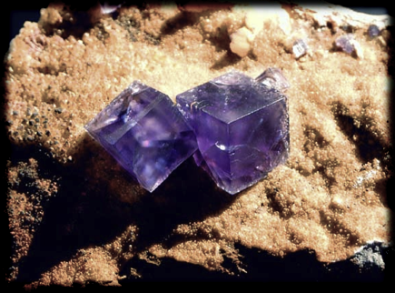

Atomene i en krystall har en bestemt romlig struktur.
De er nært knyttet til matematikken som omhandler romlige polytoper og pakking av kuler.
I programvinduet til høyre demonstreres ulike eksempler på slike romlige strukturer.
Ved å klikke på den vesle kuben eller oktaederet kan du observere hvordan strukturene
passer inn i den symmetriske strukturen til "vanlige" krystaller.
|
 |
Fluorittkrystaller danner vanlige kubiske strukturer.